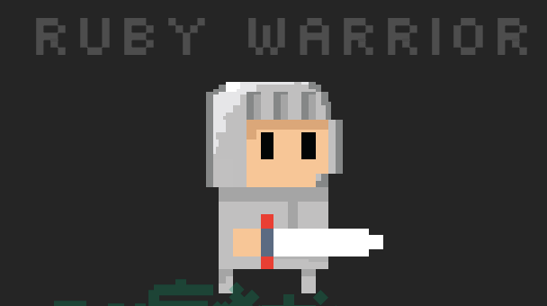

RESUME
I am currently looking for my next adventure, click here for my Resume!



I wanted to create a single page application(SPA) that will allow me to look up anime titles without being bombarded with so much info that is not exactly relevant to me. I was still learning how to use React in the front end as well as working with the tricky asynchronous nature of NodeJs in the back end (Database queries are asynch too!). Through this project , i learnt so much about JavaScript, working with older APIs that gives you data in XML and parsing them to JSON so it is easier to work with. I would really like to use more JavaScript for more of my future projects.
WDI Conference site was also a group project that i did with a few other classmates the General Assembly WDI bootcamp that i attended recently. My role in the project was mainly in the back end, which we used ruby on rails. My favourite part about the project was integrating STRIPE's payment gateway to our website which allowed us to accept real credit card payments to my STRIPE account. I also used a Ruby gem called PRAWN to render PDF tickets which i thought was cool.
This was a group project that i did with two other classmates at General Assembly. The idea was to create a job diary application to help job seekers keep track of job applications. The site was built with Ruby on Rails in the backend and to retrieve and present / manipulate data to the front end using AJAX and handlebars.
I created a web application that retrieves and displays the latest sports news via FOXSPORTS news API and users can register and bet on virtual sport matches between teams using virtual currencies. I used BootStrap as my front end framework and mainly JavaScript and JQuery for DOM traversal.
This was my first ever browser game that i have created by purely HTML, CSS , JavaScript and JQuery to manipulate the DOM. I found it tricky to check for the winning conditions but i managed to discover a trick by using binary operations that made it a lot easier. I definitely want to remake this game using React and perhaps create the real triple-triad game in final fantasy 8.